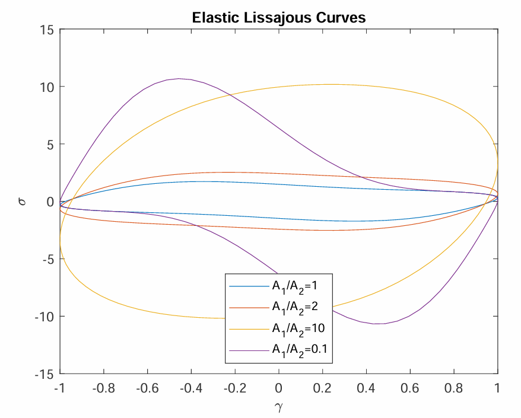

Undergraduate and Masters Research Projects
In this essay, we provide a detailed mathematical exposition of the scallop theorem. We start with a rigorous formulation and proof of the theorem before discussing three strategies that are often employed in biology and engineering to evade the constraints of the theorem. For each of the strategies, we consider a simple model consisting of a dumbbell swimmer and solve for its swimming speed asymptotically, in the limit of small amplitude deformations.
The sloshing problem is concerned with the motion of the free surface of a liquid inside a rigid container due to some kind of disturbance. Despite the significance of this problem, there are only a handful of container shapes whose sloshing frequencies can be determined analytically in a closed-form expression and for particular geometries, it has been proven that no such closed-form expressions exist. We propose a method to numerically determine the sloshing modes and frequencies of a two-dimensional tank of arbitrary shape based on Lightning Laplace solvers. Our method is particularly adept at domains with corners, which is where typical numerical methods struggle.

Here we reviewed a theoretical framework for understanding the non-linear stress response of viscoelastic fluids under medium amplitude oscillatory shear experiments and applied it to understand experimental data from the group of Dr. Pete Laity (University of Sheffield).